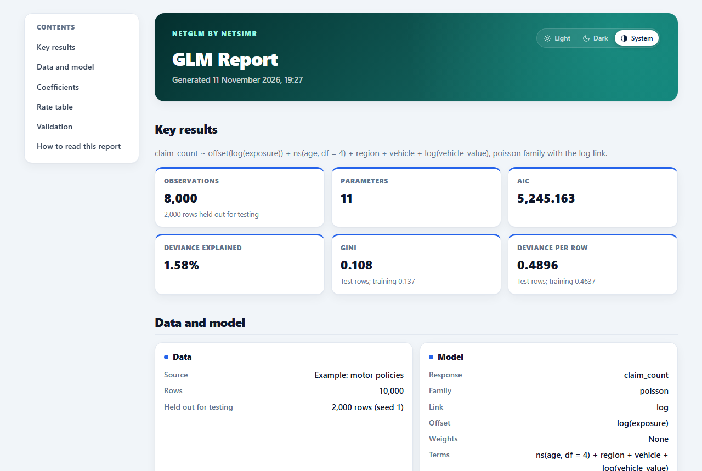
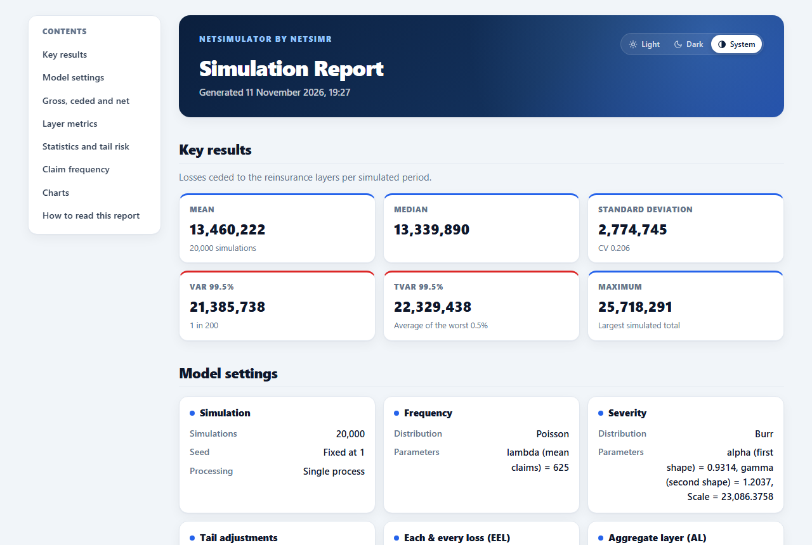
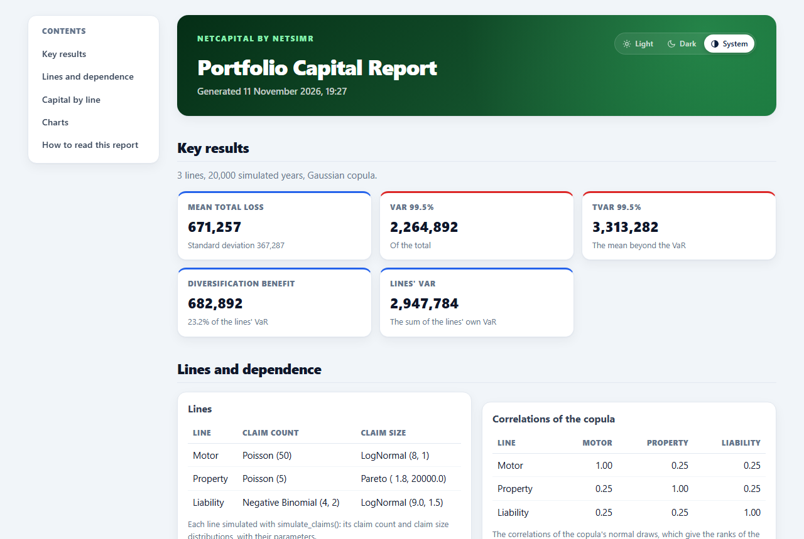

A worked example: the six tools and their reports
Source:vignettes/articles/worked-example.Rmd
worked-example.RmdThe six tools of NetSimR, each run on the example data that comes with the package, with the report it writes. Every step can be repeated in a few clicks, in your browser on the Try online page or in R, and every report below is the tool’s own: a single HTML file that opens anywhere, with its charts in a light and a dark theme, to send to a colleague or file with the work.
The reports on this page are written again each time the website is built, by the tools as they are now.
1. Pricing the policies: NetGLM
The example is 10,000 motor policies with their age, region, vehicle and vehicle value, their exposure and their claims. A Poisson model of the claim counts, with the exposure as an offset and a spline of age, is fitted to four policies in five; the fifth is held out to test it.
The report has the coefficients, the rate table with a chart for each rating factor, and the validation on the policies held out: the lift chart and the Lorenz curve, with its Gini coefficient.
To repeat it: open the tool, click Try an example, choose to hold out 20% of the rows, then click Fit model.

2. Fitting the claim sizes: NetDisFit
The example is 2,500 liability claims, of which 204 were paid at their policy limit. A claim at its limit says only that the loss was at least that large, so the tool fits the loss before the limits: eight distributions by maximum likelihood, compared with the Kaplan-Meier estimate of the claim sizes.
The Burr is the closest by the Kolmogorov-Smirnov distance and the Log-Normal has the lowest AIC; the choice between them is the actuary's. The report has the table of fits, the cumulative distributions, the Q-Q and P-P plots, and the conditional tail expectation of each fit.
To repeat it: open the tool, click Try an example, then Run analysis. On the Export tab, save the report, and the fitted Burr as a settings file for the next step.

3. Simulating the book and a layer: NetSimulator
The simulator loads the fitted Burr from the file of step 2. The question here is what the book would cost if every policy were written at the highest limit, 1,000,000: each claim is capped there, the claims of a year are a Poisson with a mean of 625 (the 2,500 claims came in four years), and an excess of loss layer of 750,000 excess of 250,000 takes the large ones.
Over 20,000 simulated years the gross claims average about 47 million a year, of which the layer takes a little over a quarter; it brings the 1 in 200 year down from about 59 million to about 40 million. The report sets gross, ceded and net side by side, with the layer's metrics and the return periods.
To repeat it: in the tool, Load settings with the file of step 2, set the claim count, the severity cap and the layer, and click Run Simulations.

4. Pricing a treaty and choosing a programme: NetTreaty
The example is a property book: ten years of large losses and premiums, and a risk profile by band of sum insured. The layer of 4,000,000 excess of 1,000,000 is rated on the experience (the burning cost and a Pareto fitted to the losses) and on the exposure (an exposure curve on the risk profile), and the two are blended into the technical premium, with its reinstatement premiums.
The Programmes tab then compares five programmes on simulated years (a quota share, the layer, a stop loss, a quota share with the layer, and a surplus treaty) by what each costs and the capital it saves. It can load a model fitted in NetDisFit, such as the file of step 2, as the claims the programmes are compared on.
To repeat it: open the tool, which starts with the example; click Compare on the Programmes tab, and save the report on the Pricing tab.

5. The capital of the portfolio: NetCapital
Three lines of business (motor, property and liability), each with its claim count and claim size distributions, are simulated together: a Gaussian copula with a correlation of 0.25 between each pair makes their bad years tend to coincide.
The report has each line's and the portfolio's VaR and TVaR at 99.5%, the diversification benefit (here nearly a quarter of the lines' own VaR), the capital each line contributes to the total, and charts of the total losses and of the dependence between two lines.
To repeat it: open the tool, which starts with the three lines, and click Run on the Capital tab.

6. Reserving the claims: NetReserve
The example is a motor triangle of paid and incurred claims, twelve origin years by twelve development years, with premiums. The chain ladder gives the ultimates and the IBNR, Mack's formula and a bootstrap of 5,000 triangles their uncertainty, and the other methods (Bornhuetter-Ferguson, Cape Cod, the Munich chain ladder) a second opinion.
The report follows the tabs: the development factors with their tail, the ultimates, the uncertainty of the reserves, and for IFRS 17 and Solvency II the discounted reserves with the risk adjustment, here at the 75th percentile of the bootstrap.
To repeat it: open the tool, choose the Simulated motor example on the Data tab, run the bootstrap on the Uncertainty tab, and save the report.

The same in code
The vignette From pricing to capital and reserves follows one portfolio through the same steps with the package’s functions, for those who work in R.
On your own data
Each tool reads CSV, text and Excel files, so the same steps run on your own policies, claims and triangles, in the browser or in R. Either way the data never leaves your computer. For tools built around your own data, methods and reporting, see Custom tools.